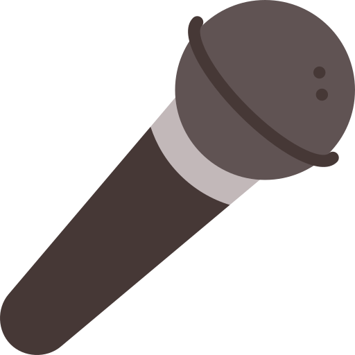

Interview de Marie, Web devloper chez AproPLAN
Présentation
Peux-tu te présenter brièvement?
Je m’appelle Marie et j’ai 24 ans. J’habite dans le brabant wallon. Je travaille depuis octobre 2016 pour APROPLAN en tant que développeuse web (front-end).
J’aime lire et regarder des séries policière, s-f, fantasy et horreur.
Mon rêve serait de partir visiter le Japon.
Où travailles-tu ? (indépendant/PME/grosse boîte/service public...)
Je travaille chez AproPLAN, il s'agit d'une PME
Quelle est ta fonction exacte au sein de l'entreprise ? Au sein de quel département de l'entreprise travailles-tu ?
Je développe l’application web de APROPLAN du côté front-end. Je suis dans l’équipe dite “production” qui comprend également les développeurs back-end et mobile
Depuis quand exerces-tu?
Je suis chez AproPLAN depuis octocbre 2016.
Peux-tu me décrire en quoi consiste ton travail?
J’écris du code en TypeScript à l’aide du framework Angular JS. Je développe ainsi de nouvelles chose où corrige les bugs sur celles qui existent déjà.
Quelles tâches annexes peux-tu être amené à accomplir?
Pour travailler nous avons un board qui regroupe les tâches que l’équipe doit faire. Il peut arriver que je “nettoie” se board en triant les choses à faire, supprimer ce qui est dupliqué. Nous avons aussi un support qui aide les clients. Lorsque le support à un problème il créé un ticket je suis amenée à aller les consulter régulièrement et bien sûr les résoudre.
Pourquoi le Webdevelopement
Qu'est ce qui t'a donné envie de faire ce métier?
J’aime construire de nouvelles choses. Et tout ce qui touche de près ou de loin à internet, aux nouvelles technologies est l’avenir
Quel est ton parcours?
J'ai étudié 3 ans à l'EPHEC de Louvain-La-Neuve
Comment es-tu parvenu a ton emploi actuel?
Il s’agit de mon premier emploie donc j’ai tout simplement passé un entretien d’embauche.
Un bon webdeveloper...
Quelles sont les qualités personnelles nécessaires pour exercer ce métier selon toi?
Ne pas avoir peur de se remettre en question et être curieux.
Quelles sont les compétences professionnelles exigées dans ce métier ?
Avoir des bases en informatiques. Connaîtres au moins un langage de programmation et savoir s’en servir. Avoir un peu de créativité aussi.
Peux-tu préciser à quelles technologies tu fais appel au quotidien ?
Au sens large : mon ordinateur, internet, etc Un peu plus précisément : Visual studio, typeScript, JavaScript, HTML, CSS, SQL,Angular, etc
Qu’est-ce qui te plaît le plus dans ton métier et pourquoi?
Tout les jours il y a de nouvelles choses à faire, on ne s’ennuie jamais.
Contraintes
Quelles sont les personnes avec qui tu es amené à entrer en relation ?
Principalement les autres développeurs mais aussi le support et parfois aussi les clients.
Y a-t-il des conditions de travail spécifiques ? Des contraintes physiques ?
On est assis pratiquement toute la journée à part cela, non.
Quels sont les problèmes auxquels tu peux être confronté ?
Le stress lorsqu’une échéance approche.
Le marché de l'emploi
Quelles sont les évolutions possibles selon toi ?
Il y en a beaucoup trop pour être énumérée. On peut continuer sur la même voie et devenir sénior en développement ou changer d’environnement (vers le mobile par exemple).
Quel est l'état du marché de l'emploi pour ce métier en général selon toi ? Dans ta zone géographique ?
C’est relativement demandé surtout en région de Bruxelles capital.
Existe-t-il des difficultés de recrutement dans ton métier ?
Si l’employeur recherche quelqu’un qui maîtrise une technologie bien spécifique.
As-tu déjà été démarché par un recruteur ?
Non
Conseils...
Y a-t-il des personnes à qui tu déconseillerais de faire ce métier ?
Les personnes ne sachant pas tenir en place et sensible au stress.
Quels conseils me donnerais-tu ?
D’élargir au maximum tes horizons, de ne pas hésiter à te renseigner sur tout ce qui touche de près ou de loin aux nouvelles technologies